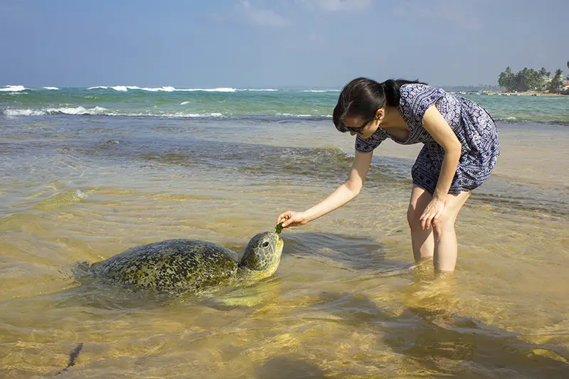
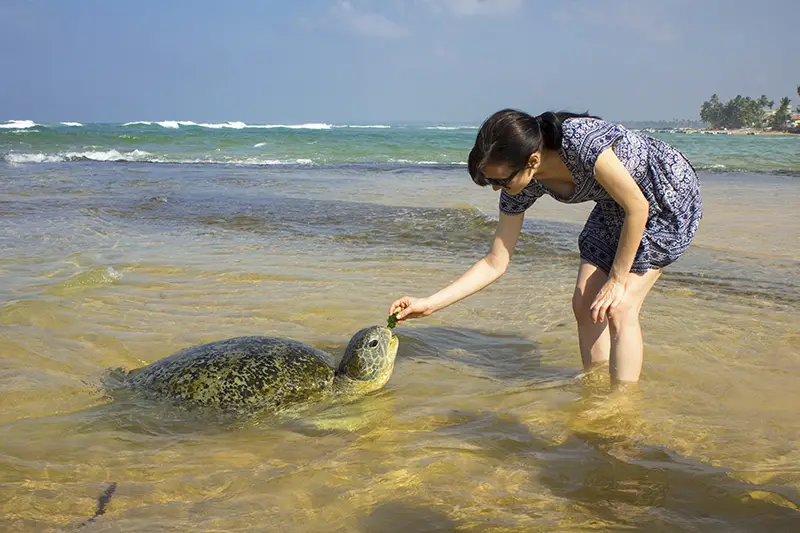

HIKKADUWA TURTLE HATCHERY
The Hikkaduwa Turtle Hatchery, located in the coastal town of Hikkaduwa in Sri Lanka, is a renowned conservation facility dedicated to protecting and preserving sea turtles.
The hatchery plays a crucial role in ensuring the survival of endangered turtle species by providing a safe environment for the incubation and hatching of turtle eggs.
The hatchery collects turtle eggs from vulnerable nesting sites, protects them from predators and human disturbance, and monitors their development until they are ready to be released into the ocean.
The facility also educates visitors about the importance of turtle conservation and the threats facing these majestic creatures, promoting awareness and fostering a sense of responsibility towards their protection.
 


WHAT CAN YOU DO?
In Hikkaduwa Turtle Hatchery, there are several activities and things you can do to enhance your experience and contribute to turtle conservation efforts.
Here are some things you can do at the hatchery:
1. Learn about Turtle Conservation: Take part in educational programs and guided tours that provide insights into the life cycle of sea turtles, their nesting habits, and the conservation efforts undertaken at the hatchery.
Gain knowledge about the different turtle species and the challenges they face in the wild.
2. Witness Turtle Hatchlings: Get a chance to witness the magical moment of turtle hatchlings emerging from their nests and making their way towards the ocean.
You can observe the hatchlings being released into the sea, supporting their safe journey and increasing their chances of survival.
3. Volunteer and Participate: Engage in volunteering activities at the hatchery, such as assisting in the care and feeding of turtles, cleaning the tanks, or helping with other conservation-related tasks.
This hands-on involvement allows you to make a direct impact on turtle conservation efforts
4. Adopt a Turtle: Support the hatchery's conservation initiatives by adopting a turtle. By adopting a turtle, you contribute financially to its care, feeding, and release into the ocean.
You may even have the opportunity to name the turtle and receive updates on its progress.
5. Responsible Interaction: Interact with turtles responsibly by following the guidelines provided by the hatchery staff.
This ensures the well-being and safety of the turtles. Avoid touching or disturbing the turtles unless instructed by the staff.
6. Support the Hatchery: Contribute to the hatchery's conservation efforts by making a donation or purchasing souvenirs and merchandise available on-site.
The funds generated are used to sustain the hatchery's operations and support ongoing turtle conservation programs.
Remember, the primary goal of the Hikkaduwa Turtle Hatchery is to protect and conserve sea turtles.
By participating in these activities, you can actively contribute to their preservation and raise awareness about the importance of turtle conservation in Hikkaduwa and beyond.